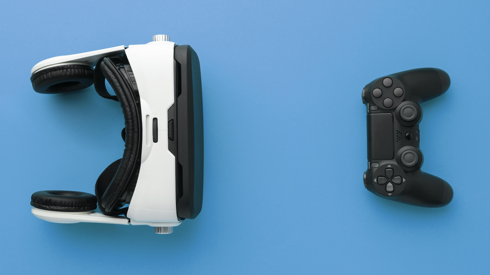

Gaming devices have firmly
entered the lives of gamers,
becoming an integral part of the gameplay.
Not only comfort depends on them, but
also effectiveness in virtual battles.
Properly selected devices can
dramatically change the perception
of the game and take the
user to a new level.
Devices
The key element is, of course, the gaming mouse. High sensor accuracy,
customizable buttons and ergonomic design are what sets it apart from
the usual office model. This allows the gamer to react to what is
happening on the screen with lightning speed and control every movement.

The keyboard is equally important. Mechanical switches ensure a clear
response and durability. Many models are equipped with backlight and
programmable keys, which adds convenience and personalization. The
gaming headset immerses you in the atmosphere of the game, allowing you
to hear every rustle and explosion. High-quality sound provides an
advantage, helping to navigate in space and react in time to the actions
of the enemy
Gamepads, especially relevant for console games and some PC genres,
provide user-friendly controls and intuitive character control. A
monitor with a high refresh rate and low response time is the key to a
smooth image without blurring, which is especially important in dynamic
games.

Market

Streamers and content makers can't do without a microphone with good
noise isolation and a high-resolution webcam. Choosing gaming devices is
an individual process, depending on preferences and budget. The main
thing is to choose devices that will be as convenient as possible and
help you unlock the full potential of your favorite games.
The modern market offers a huge variety of gaming devices, from budget
options to premium models with advanced functionality. It can be
difficult to navigate this variety, so it's worth paying attention to
reviews from professional gamers and expert reviews.


In addition to the main devices, there are additional accessories that
can enhance the gaming experience. These can be gaming chairs that
provide a comfortable fit during long gaming sessions, mouse pads with
an optimized surface for better sliding, as well as various stands and
holders for peripherals.